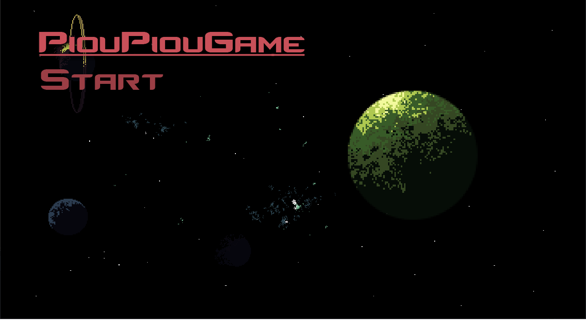
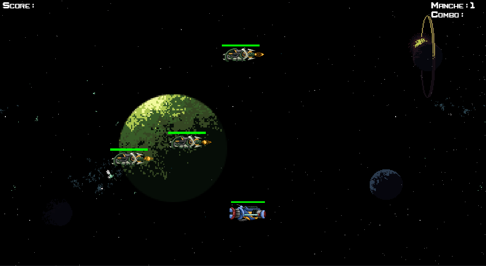
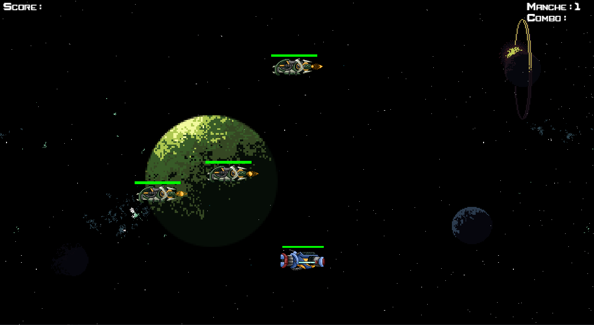
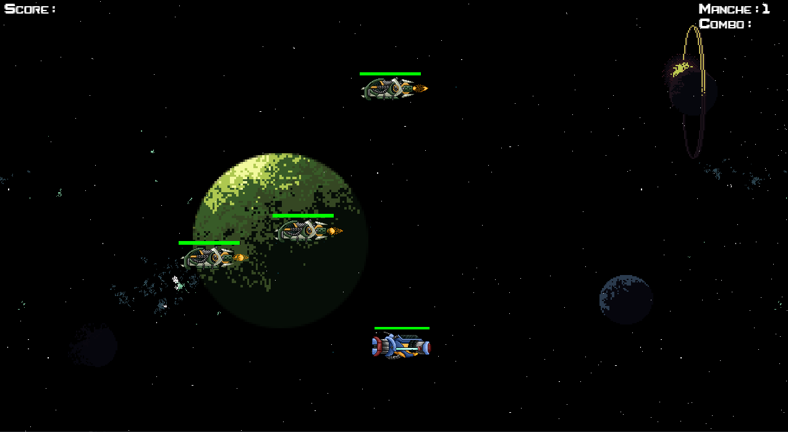
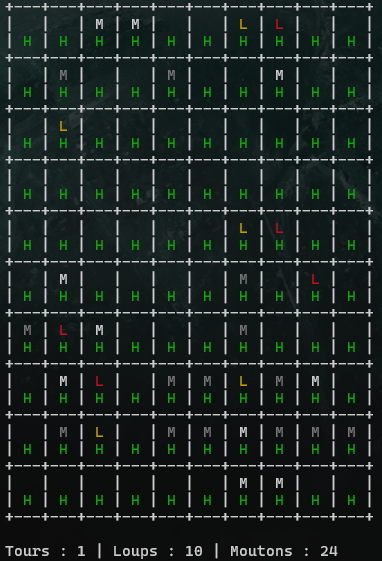
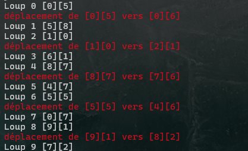
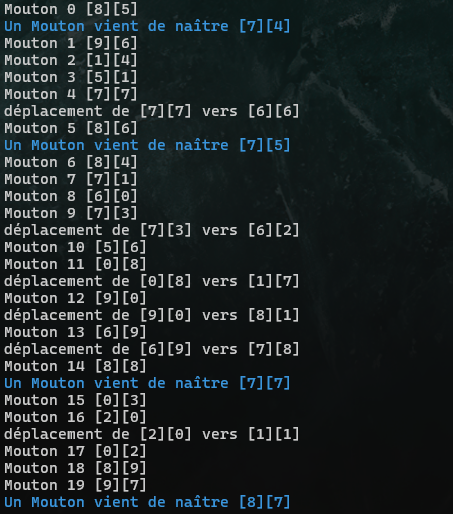
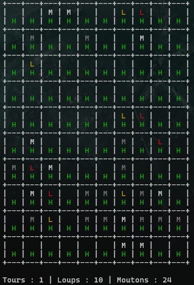
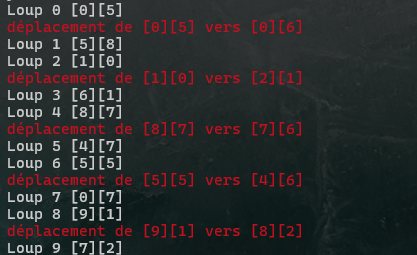
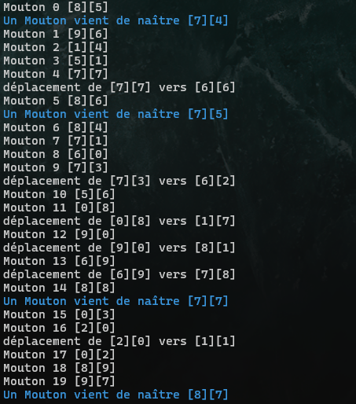

Durant mes années de lycée, je me suis initié à la programmation orientée objet en utilisant Python, et sa bibliothèque Pygame pour créer des jeux vidéo.
Ainsi, je me suis lancé dans la création d’un side-scroller avec une boucle de gameplay simple : lancer le jeu, atteindre le niveau 10 en survivant et en éliminant les ennemis, dont deux boss, avant de recommencer.
Avec du recul je conçois que l'API Pygame n'est pas la meilleur mais je souhaite quand meme vous montrer mes débuts. Ce projet m'a appris beaucoup de choses telles que :
- Utilisation de la programmation orientée objet avec l'instanciation des ennemis, des projectiles et la gestion des scripts pour la gestion du jeu.
- Utilisation et animation de sprites 2D ainsi que l'implémentation de fonctions de parallaxe pour les étoiles en arrière plan
- La mise en place d'un système d'événements pour la musique au lancement du jeu puis dans les menus

 

Il est téléchargeable sur Itch.io.



 




